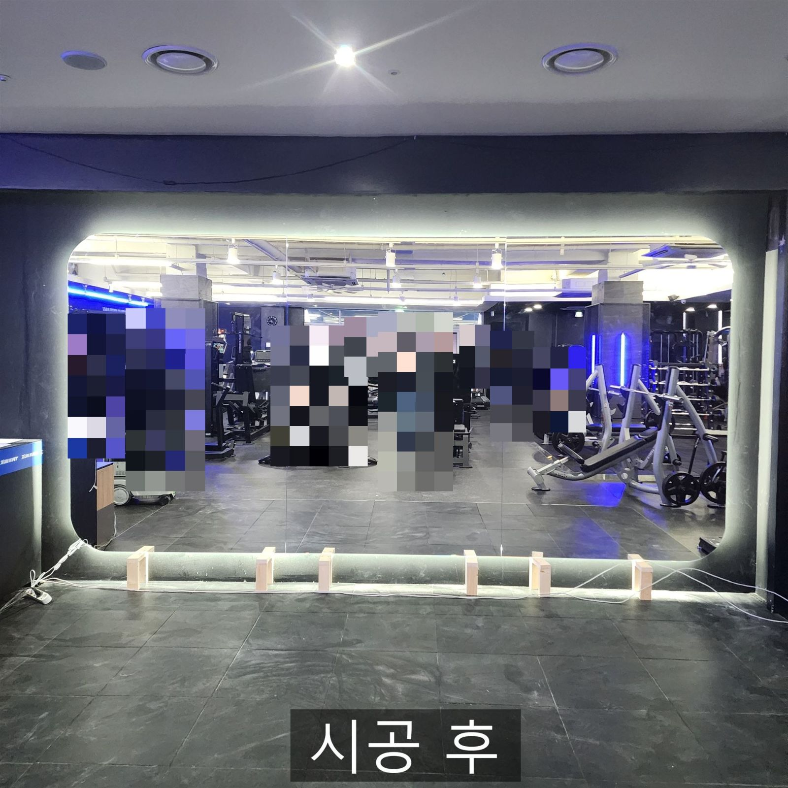

대형 전신거울 설치
벽 한 면을 거울로 채우면 공간이 넓어 보이고, 운동하는 동작을 바로 확인할 수 있습니다. 청년유리는 거울 크기를 정하기 전에 그 거울이 현장까지 들어갈 수 있는지부터 확인합니다.
거울 크기는 운반 동선이 정합니다
거울은 휘거나 접을 수 없습니다. 계단 폭과 꺾이는 구간, 엘리베이터 크기를 통과하지 못하면 아무리 큰 거울도 설치할 수 없습니다.
그래서 실측 때 줄자를 거울 크기만큼 펼쳐 계단을 직접 오가며 동선을 확인합니다. 안양동 지하 댄스학원은 이렇게 확인해 운반 가능한 최대 크기인 1200×2100으로 정했습니다.
벽 상태와 콘센트까지 맞춰 붙입니다
벽이 고르지 않은 상태에서 그대로 붙이면 들뜸이 생기거나 비친 모습이 왜곡될 수 있습니다. 하부 쪽에 실리콘을 촘촘히 채워 단단히 고정하고, 하단 받침목으로 수평을 맞춘 뒤 이음매가 어긋나지 않게 한 장씩 조정합니다.
쓰고 있는 콘센트가 있으면 위치를 재서 거울을 네모로 타공하고, 설치 후 콘센트를 거울 위에 다시 고정합니다.
이런 거울을 시공합니다
- 헬스장·필라테스·댄스학원·스포츠센터 벽면 대형거울 (높이 3000 초대형 전면거울 포함)
- 간접조명 거울, 타원형·아치형 디자인 거울
- 미용실 경대 제작, 네일샵 디자인 거울
- 현관·신발장 맞춤 전신거울, 냉장고장 거울도어
- 주방 상부장 브론즈경, 의류매장 은경, 실사 출력 거울
- 목욕탕·사우나 거울, 기계식 주차장 전면 거울 교체
가격은 '자' 단위로 계산합니다
1자는 30×30cm입니다. 보통 1자당 6,000원에서 10,000원 사이이며, 시공비와 부자재비가 포함된 금액입니다. 면적이 넓을수록 단가를 낮춰 드리고, 거울 한 장만 의뢰하시면 최소 시공 가격이 있어 더 들 수 있습니다. 먼 지역은 운반비가 추가됩니다.
거울 견적 미리 계산하기 →대형 전신거울 시공사례 5건

경기도 광주 운동 학원 벽거울 시공
벽거울 시공은 거울을 몇 장으로, 한 장을 얼마 크기로 나눌지부터 정해야 순서와 견적이 함께 나옵니다. 경기도 광주시의 한 줌바 수업 학원은 한쪽 벽에만 거울이 …

송파구 운동 시설 경사거울 시공
경사거울은 윗부분을 벽에서 띄워 아래쪽을 내려다보게 다는 거울입니다. 송파구 가락동의 한 헬스장에서 기둥 사이 높은 벽에 이렇게 숙인 거울 두 장을 달았습니다. …

영등포 실내 골프 매장 거울수리
거울 수리 문의 가운데 가장 서둘러야 하는 경우가 영업 중인 매장의 깨진 벽거울입니다. 영등포구 문래동의 한 스크린골프장은 8번 타석 옆 칸막이 거울이 골프채에 …

회사 운동실 대형벽거울
대형벽거울은 빈 벽에 붙이는 경우가 대부분이지만, 이번 경기 시흥 현장은 회사 운동실에 기구가 모두 자리 잡은 뒤였습니다. 기구는 거의 옮기지 않고 통로만 비워 …

안양 지하 무용 연습실 대형거울설치
대형거울설치는 판이 클수록 이음매가 줄어 보기 좋지만, 지하 공간은 거울이 계단을 내려갈 수 있는지부터 따져야 합니다. 경기 안양의 한 지하 무용 연습실은 실측 …
전신거울 설치 가격은 어떻게 되나요?
관련 시공사례 보기 →
지하나 계단이 좁은 곳도 대형 거울 설치가 되나요?
관련 시공사례 보기 →
벽이 고르지 않거나 콘센트가 있어도 거울을 붙일 수 있나요?
관련 시공사례 보기 →
댄스학원 연습실 거울은 두께가 몇 mm인가요?
관련 시공사례 보기 →